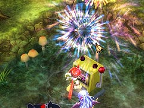
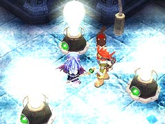
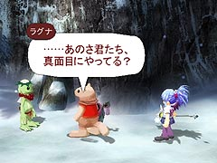

また、これを利用して、自爆寸前の「あーけろん」を掴み自爆のダメージを無効化したり、「かおしっくあい」のレーザーを回避したりすることができます。

(あーけろん)
目次 > ゲームについて > 日本Falcom 攻略 > ZWEI II > 情報
らんの眼
ZWEI II (ツヴァイ 2、ZWEI II Plus)
| 概要 | 情報 | 攻略チャート |
| フード交換 | ペットについて | ボス戦 |
| 敵キャラ一覧 | ハンターランク | G-コロッセオ |
| アイテム一覧 | ガジェット一覧 | トレジャー一覧 |
| ダンジョン一覧 | クリアデータ特典 | Plusの追加要素 |
| ZWEI II攻略へ | 目次へ戻る |
| [ 1 ] [ 2 ] [ 3 ] [ 4 ] [ 5 ] [ 6 ] [ 7 ] |
| フックギアを使った攻撃、攻撃回避 |
| フックギアで掴んでいる敵が行う攻撃は、主人公側の攻撃と判断されます。そのため、故意に攻撃させることは非常に難しいですが、掴んでいる敵の攻撃で他の敵にダメージを与えることができます。 また、これを利用して、自爆寸前の「あーけろん」を掴み自爆のダメージを無効化したり、「かおしっくあい」のレーザーを回避したりすることができます。 (あーけろん) |
| レベルプレートG の効果 |
| 「レベルプレートG」を使うと、そのダンジョンに出てくる敵のレベルが全て30 となるだけではなく、敵が落とすお金の額やフードのランクが上がります。ちなみにフードはフードスロットの3
段目のものをランダムで落とすようです。また、敵が全くスタンしなくなり、攻撃を食らう可能性がぐっと高まります。 また、ダンジョン最後にあるスロットマシーンから出てくるフードが豪華になり、なおかつ何度も利用できたり、一部のダンジョンで全く別のトレジャーを入手することができます。 |
| スロットマシーンの花火 |
| ダンジョン最後にあるスロットマシーンは、「5」か「6」の目を出すと、花火が打ち上げられるのですが、なぜかフードを吐き出した後も、アンカーギアでスロットマシーンを攻撃するたびに花火が打ち上げられます。 ZWEI II Plus では修正されています。  |
| エンディングまでトレジャーハンター協会に顔を出さない |
| エンディングまでに一度もトレジャーハンター協会に顔を出さなくても、なぜかエンディングではカルディナさん(名前を知らないはず)から餞別をもらうことができます。 しかも、餞別だけではなく、ハンターランクに応じたアイテムも、もらうことができます。残念ながら、今後役立てることはできませんが。 そして、荷物が届かなかったテオ先生は、博物館の展示スペースが埋まらなかったことを嘆いています。「新設の展示スペース」が埋まっていないと彼は言っていますが、展示品がちゃんとおいてある展示スペースすらないように見えるのは気のせいでしょうか。 |
| 電球について |
| ダンジョンの仕掛けの1 つに電球があります。電球はアルウェンの全ての魔法、ブレードギアによる攻撃で点灯します。他にも、なぜかペットの攻撃や爆弾の爆風でも点灯します。 また、点灯した電球は一定時間放置するか、ブレードギア以外で攻撃することで、明かりが消えます。  「Zwei!!」では電球は光や炎の魔法ではないと点灯せず、闇の魔法なら消える・・・といった設定があったのですが、「ZWEI II」では魔力に反応して点灯するものになったようですね。 |
| カッパの文句 |
| 星降りの里の井戸にお金を入れることにより、遊ぶことのできるカッパフィールドですが、制限時間をオーバーしゴールしたり、穴に落ちたりすると、カッパから文句を言ってもらえます(全然嬉しくないですが)。 また、壺やハニワを1 つも割らずに、なおかつ制限時間内にゴールすると、なぜかラグナが文句を言ってきます。これはZWEI II Plus では修正されました。  |
| [ 1 ] [ 2 ] [ 3 ] [ 4 ] [ 5 ] [ 6 ] [ 7 ] |
| 概要 | 情報 | 攻略チャート |
| フード交換 | ペットについて | ボス戦 |
| 敵キャラ一覧 | ハンターランク | G-コロッセオ |
| アイテム一覧 | ガジェット一覧 | トレジャー一覧 |
| ダンジョン一覧 | クリアデータ特典 | Plusの追加要素 |
| ページの上部へ | ZWEI II 攻略へ | 目次へ戻る |